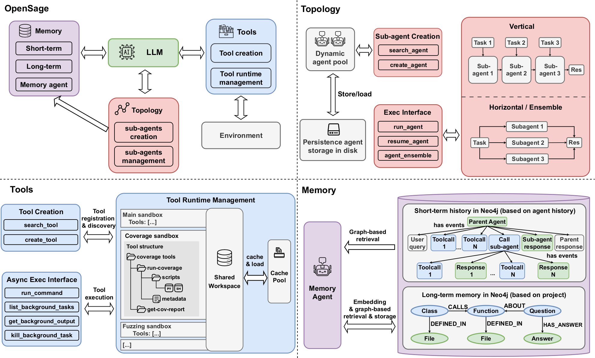
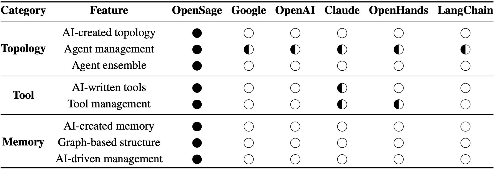
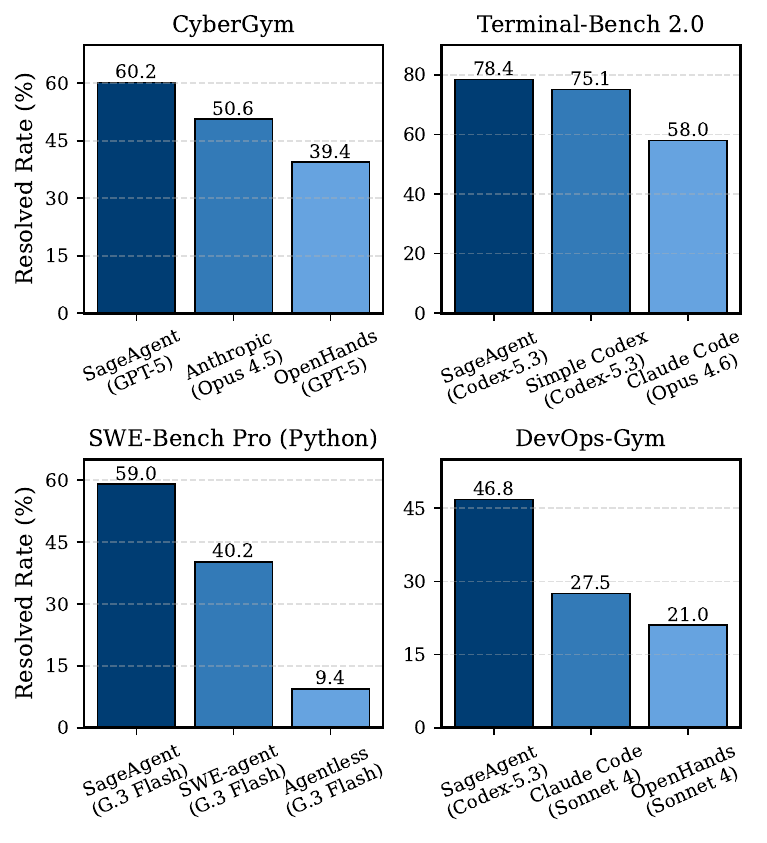
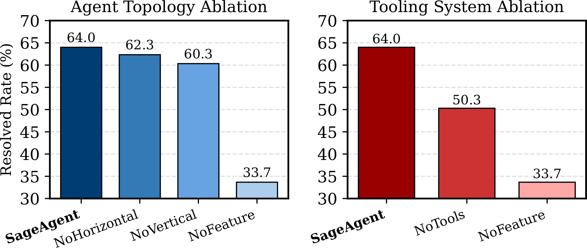
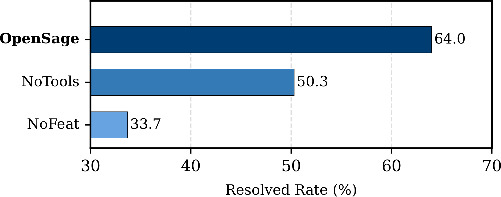
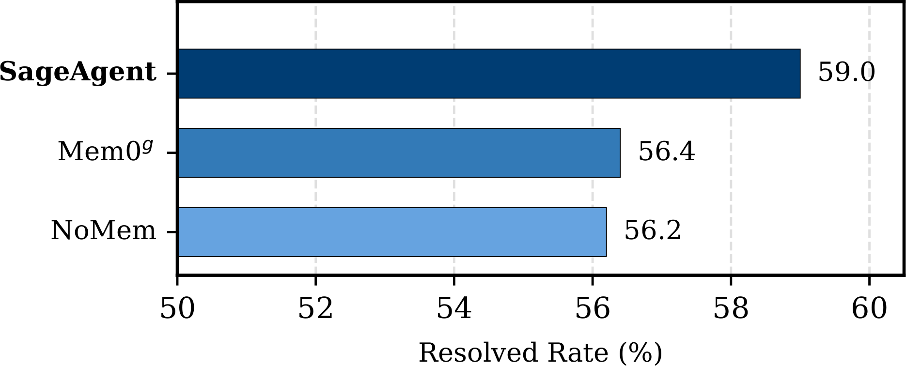
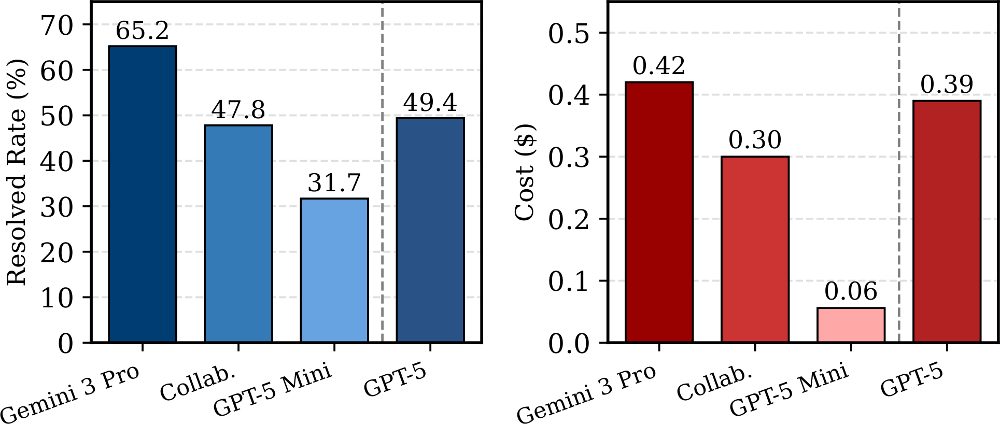

OpenSage: Self-programming Agent Generation Engine
An AI-centric agent generation engine that enables LLMs to self-create agent topology, synthesize toolsets, and manage structured memory for complex real-world tasks.
Overview

OpenSage (Open Self-programming Agent Generation Engine) is an AI-centric agent framework designed to shift agent development from a human-engineered, fixed paradigm to an AI-driven, self-programming one. Instead of requiring developers to hand-design workflows, tool lists, and memory logic for each task, OpenSage provides a minimal scaffold that lets the model create and orchestrate these components at runtime.
OpenSage is built around three core systems that strongly influence agent performance:
- Self-generating agent topology: the agent can dynamically create, execute, and terminate sub-agents during task execution, supporting both vertical agent topology (decomposing a complex task into sequential sub-tasks handled by specialized sub-agents) and horizontal agent topology (multiple sub-agents execute the same task using distinct plans, then merge results via an agent ensemble mechanism).
- Dynamic tool synthesis and management: the agent can create tools during execution (e.g., scripts, analyzers, generators), supported by a tooling runtime with tool-specific sandboxing and state management. Agents can also create skills with the OpenSage framework.
- Hierarchical Memory Management: target-level long-term memory (a graph database for shareable knowledge) plus execution-based short-term memory (a graph structure for tracking agent runs), with a built-in, dedicated memory agent for memory management that can be enabled with a single line of code.
Feature Matrix
Comparison between OpenSage and SOTA ADKs in key features. ● means full support; ◐ means partial or limited support; ○ means not supported.

Top of the Leaderboard on Multiple Benchmarks
Unlike toy frameworks, agents built with OpenSage are evaluated on four state-of-the-art benchmarks and achieve top-tier performance at submission time:
- 🏆 CyberGym: 60.2% (vs. 39.4% OpenHands)
- 🏆 Terminal-Bench 2.0: 78.4%
- 🏆 SWE-Bench Pro: 59.0% (vs. 40.2% SWE-agent)
- 🏆 DevOps-Gym: 46.8%, only agent completing end-to-end tasks

Key Techniques
Self-generating Agent Topology
- Dynamic creation/execution/termination of sub-agents
- Vertical topology and horizontal topology
- Agent ensemble mechanism
Dynamic Tool Synthesis
- Dynamic tool synthesis and management
- Tool-specific sandboxing and tool state management
- Domain-specific tool set tailored to software engineering and security tasks
Hierarchical Memory Management
- Short-term memory: graph-based short-term memory
- Long-term memory: graph-based long-term memory generated by agents
- Memory agent: built-in dedicated agent for memory management
Domain-Specific Toolkit
OpenSage includes a comprehensive toolkit spanning software engineering and security, covering both static and dynamic analysis, enabling agents to perform real-world tasks out of the box.
| Category | Tool set | Libraries | Features |
|---|---|---|---|
| Static | Code analysis | Joern, CodeQL | CPG query, call graph analysis, dataflow slicing, semantic-aware search |
| Dynamic | Fuzzing | AFL++, LibFuzzer | Customizable seed generation, mutation, scoring |
| Dynamic | Coverage | LLVM-Cov | Query coverage with Neo4j, generate detailed reports |
| Dynamic | Debugger | GDB, PDB | Breakpoints, inspect states, trace execution, custom commands |
More Key Findings
In addition to the overall benchmark scores, our analyses provide more concrete evidence for why OpenSage works: agent topology, tooling, and memory each contribute materially, and the framework supports practical patterns like heterogeneous model collaboration.

Topology + tooling are both necessary (CyberGym). This plot quantifies how OpenSage’s key design choices affect end-to-end vulnerability reproduction.
The left panel isolates agent topology effects (horizontal ensemble and vertical dynamic sub-agents). The right panel isolates the tooling system contribution versus a raw terminal and a no-feature baseline.

Tooling is more than a shell (CyberGym). Evaluates OpenSage’s tooling system versus replacing it with a raw terminal interface.
This highlights the benefit of dynamic tool synthesis plus tool/runtime management beyond “just having a bash tool”.

Memory helps long-horizon tasks (SWE-Bench Pro). Compares OpenSage’s memory against no-memory and Mem0g.
OpenSage’s hierarchical, agent-managed memory achieves the best performance among the compared baselines. Long-horizon tasks benefit from explicitly storing high-signal intermediate findings and retrieving them at the point of need, especially after history compaction or when revisiting earlier decisions.

Heterogeneous model collaboration (Terminal-Bench). Shows resolved rate and cost when combining a strong “planner/reviewer” with a cheaper “executor” via sub-agents.
This demonstrates OpenSage’s flexibility for cost/quality trade-offs by assigning different models to different roles.
How OpenSage Enhances Agent Capabilities
Across experiments, we observe rich self-programming behaviors:
- Dynamic sub-agent creation: Backbone models actively create sub-agents for distinct sub-tasks with synthesized system prompts and focused toolsets, such as dedicated debugging agents.
- Autonomous tool writing: Agents construct task-specific tools, including grammar-aware fuzzers and format-specific seed generators, instead of relying solely on general-purpose tools.
- Intelligent memory usage: The memory agent selectively persists high-signal information and leverages graph-based retrieval to avoid redundant queries and keep context focused.
These capabilities significantly enhance agent autonomy and problem-solving ability.
Suggestion for Model Improvement
At the same time, we observe that current models do not always use these advanced features optimally. In some cases, the invocation frequency of these capabilities remains low; models may forget to reuse existing agents or memory, create sub-agents with mismatched toolsets, or hallucinate tools. This highlights a capability gap: OpenSage's AI-centric features are effective, but stronger models will be needed to fully exploit them.
To address this, OpenSage also provides integrated training support, including large-scale RL post-training rollouts, along with seamless integration with RL frameworks such as AReaL and slime, and sandbox infrastructure designed for parallel and scalable execution.
Citation
@misc{li2026opensage,
title={OpenSage: Self-programming Agent Generation Engine},
author={Hongwei Li and Zhun Wang and Qinrun Dai and Yuzhou Nie and Jinjun Peng and Ruitong Liu and Jingyang Zhang and Kaijie Zhu and Jingxuan He and Lun Wang and Yangruibo Ding and Yueqi Chen and Wenbo Guo and Dawn Song},
year={2026},
eprint={2602.16891},
archivePrefix={arXiv},
primaryClass={cs.AI},
url={https://arxiv.org/abs/2602.16891},
}